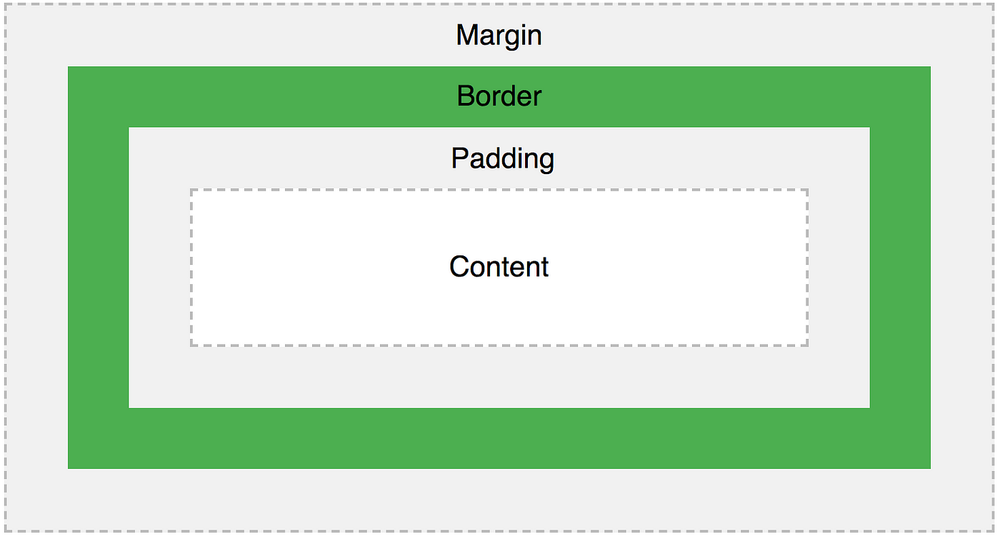

6 - BOX MODEL IN CSS
[ 1. ] - "Content/Element" in Box - Model

[ 2. ] - "padding" in Box - Model
Using individual padding properties ----
This div element has a top padding of 90px, a right padding of 50px, a bottom padding of 50px, and a left padding of 10px.
[ 3. ] - "border" in Box - Model
This div container element has a border of width 4px and border style is solid with border color black along all four sides.
"border-radius" in Border : This property is used to add rounded borders to an element !
Normal border
Round border
Rounder border
Roundest border
[ 4. ] - "margin" in Box - Model
Using individual margin properties ----
This div container element has a top margin of 20px, a right margin of 30px, a bottom margin of 200px, and a left margin of 80px.
Use of margin: auto ;
This child div will be horizontally centered because it has margin : auto;